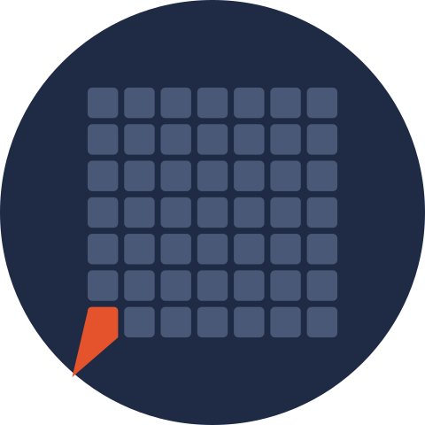
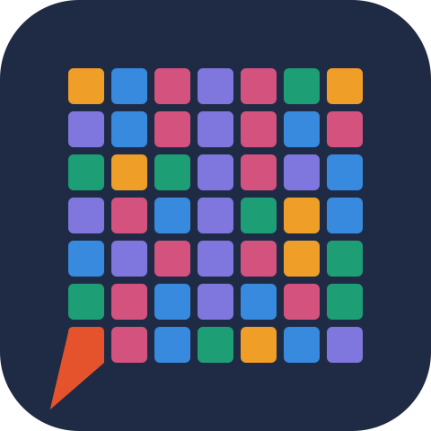
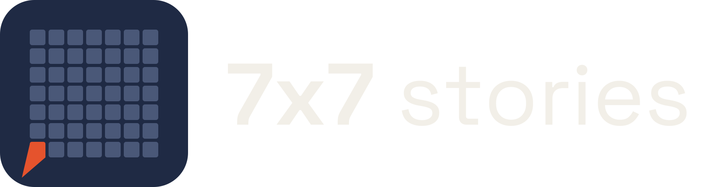
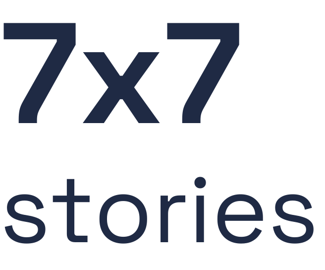
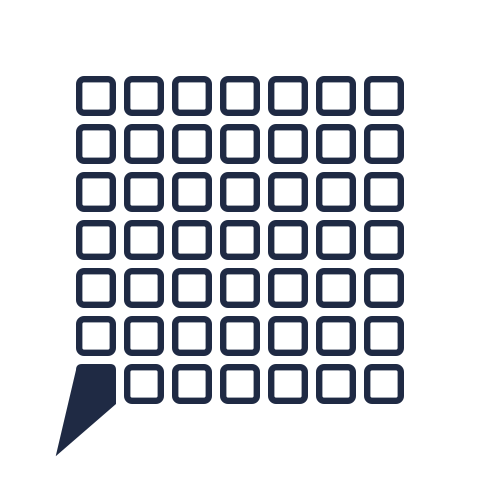
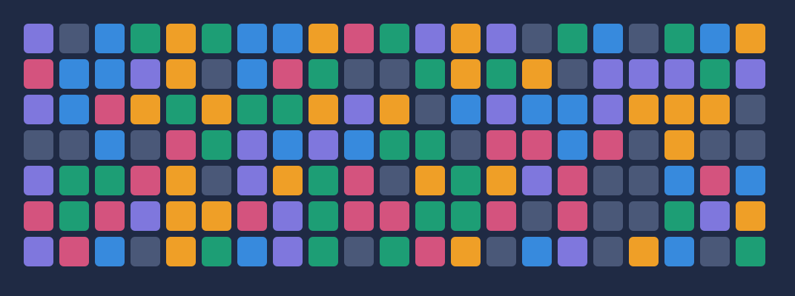

Stories & community
Youth leader A + 1 member
- Interviews
- Youth liaison and waivers
- Recruiting
A youth-led digital zine and Reel series. Young people from every corner of San Francisco, telling their own stories in their own words.
We’re funded by the SF Youth Empowerment Fund’s Fall 2026 Mini Grant ($2,000, materials and supplies). Last updated November 3, 2026.
Spending isn’t approved yet. Our fiscal sponsor’s paperwork is with YEF. Keep recruiting, collecting stories and filming with gear we already own, but don’t buy anything until the project lead confirms approval in the group chat. Purchases made before approval can’t be reimbursed.
7x7 Stories selected for the Fall 2026 cycle.
Source of this month’s to-do list.
Narrative report, logo, two photos and a 10-second video. Media waivers for anyone shown.
No purchases after this date.
Every report and document submitted, including a December report if we spend between Dec 1 and Dec 7.
A digital zine and a documentary-style Reel series featuring stories, art and lived experiences of young people from all 11 San Francisco districts, written, filmed and edited by youth.
Targets by Dec 7: 8–10 stories collected, one digital zine issue featuring 6–8 of them, 4–6 Reels, a launch post or event, and contributors from at least 4 districts and 3 schools.
Three departments, one youth leader each. With a small team, people wear more than one hat; as we grow, departments split.
Advisor and backstop for paperwork. Volunteer role.
Main contact with YEF and our fiscal sponsor. Deadlines and coordination.
Freedom Forward / HYPE Center. Makes every purchase.
Youth leader A + 1 member
Youth leader B + 1 member
Youth leader C + 1 member
One weekly team call (about 45 minutes) through Dec 11, plus a short check-in near the 1st of each month to prepare the report due on the 5th.
The report is due even in months we spend nothing. If the 5th falls on a weekend, it moves to Monday.
| Who buys | Our fiscal sponsor makes every purchase. No out-of-pocket spending by youth or adults; it won’t be reimbursed. |
|---|---|
| When | Only after YEF approves spending, and no later than Mon, Dec 7. |
| What | Materials and supplies for the project, bought in San Francisco or online. Tech is allowed; items over $1,000 need a sign-out sheet. |
| Receipts | Itemized: vendor, date, items, total and proof of payment. |
| Food at events | Itemized receipt, an event agenda and a signed sign-in sheet. Delivery orders must be picked up. |
Never allowed:
Two ways in, and you can do both. No experience needed: if you have something to say about growing up in San Francisco, that’s the whole point.
Do one 30–45 minute interview, in person at the HYPE Center or on Zoom, or send in writing or art. You’ll sign two media waivers and see your story before anyone else does.
About 1–2 hours total
Help interview, write, edit, design, film, run Instagram or plan the launch. Real production experience and a publication credit for your portfolio or college applications.
About 2–3 hours a week through Dec 11
Email 7x7storiessf@gmail.com with your name, school, and whether you want to be featured, join the team, or both.
How 7x7 Stories looks, sounds and moves, on Instagram, in the zine, in Reels and at the launch.
One block speaks. Then every block does.
San Francisco is about 7 miles by 7 miles. Our grid has 49 blocks. We turn up the volume on one young person’s story at a time, and keep going until the whole city is one big conversation.
Young people pick the stories, run the interviews, edit the cuts and approve their own story. Credits name youth roles first.
All 11 districts, many schools, many languages. No single neighborhood is the main one.
Real words, lightly edited. Verbatim quotes, natural sound, minimal filters.
A story is shared, not taken. Storytellers can see, change or withdraw theirs before it goes live.
Mission. Make SF youth voices visible, build connection across neighborhoods and campuses, and create a media platform that young people produce, edit and own.
Audience. SF youth ages 14–24, especially voices rarely centered in media: multilingual, immigrant, LGBTQ+ and system-impacted young people. Plus the adults and organizations who need to hear them.
A 7×7 grid of city blocks on a navy tile. The bottom-left block is orange and has pulled its corner out into a tail, so the whole grid becomes one big speech bubble. When the city answers, every block fills with a mural color: many voices, one bubble.






Navy is the ground. Orange is the voice, the Golden Gate’s color, used for the tail and once per layout so it always means “listen here.” The five mural colors stand for many neighborhoods and always appear together. Select a swatch to copy its hex code.
Proportions: about 60% fog or navy, 30% text and photos, 10% color, with orange appearing once. Accessibility: body text is navy on fog (13:1) or fog on navy (12:1). Orange and the mural colors are for shapes and large bold words, not small text.
7x7 Aa
Space Grotesk, bold for numbers and headlines, medium for titles. Free on Google Fonts.
Aa Bb
DM Sans for captions, body copy and subtitles. Free on Google Fonts.
Use sentence case everywhere. Let storytellers’ own capitalization stand inside quotes. Pull quotes get the storyteller’s first name and neighborhood underneath:
“I learned the 14 Mission before I learned English.”
We sound like a friend from another neighborhood introducing you to someone worth hearing.
“Maya, 17, Excelsior, on learning English at 14,” not “We are excited to present…”
A street, a bus line or a corner store beats “community” and “empowerment.”
If a 14-year-old wouldn’t say it, rewrite it.
No “overcoming the odds” framing unless the storyteller chose it.
Instagram caption formula: a hook line from the story, then who, how old and which neighborhood, one line of context, “Full story in the zine, link in bio,” and #7x7Stories. Credit the Youth Empowerment Fund and follow YEF’s social media guide for tags.
The logo has one signature move, about 4–5 seconds, used to open or close Reels. The hero at the top of this page plays it:
Natural light, real places, people mid-sentence rather than posed. Use the 85mm lens for interviews and wide neighborhood shots to set the scene. Behind titles, use the mural pattern with text on a solid navy panel, never directly on the tiles.

This site is public, so some things are deliberately not on it. Here’s where to find them. If you can’t, message Boss in the team group chat or email 7x7storiessf@gmail.com.
| Contacts for YEF, our fiscal sponsor and our adult ally | Team handbook PDF, page 1 (shared in the team group chat). Only the project lead emails YEF, in the one main thread. |
|---|---|
| Team members’ names, numbers and roles | The team group chat. Ask Boss to be added. |
| The YEF grantee Drive folder | Shared by YEF to the project email and youth leaders. Ask Boss for access; don’t forward the link. |
| Report templates, receipt folders, social media upload folder | Inside the grantee Drive folder, under Grant Reporting and Grantee Social Media. |
| Signed media waivers | Drive › Media Release Forms. Blank templates are there too. Only leaders open signed copies. |
| Storytellers’ names, contact details and raw interviews | Held by the Stories & community lead only. Never posted or shared outside the team. |
| Budget line items and receipts | Budget proposal in our Google Drive; receipts with the Ops & reporting lead. |
| Our original application answers | Team handbook PDF, Appendix A. |